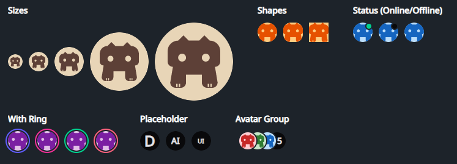

DaisyAvatar
Overview

DaisyAvatar renders user/profile images or initials with 5 sizes, 3 shapes, optional status dot, and ring accent colors. It accepts any content (images, icons, initials) and can show placeholders while real media loads. Pair with DaisyAvatarGroup to overlap multiple avatars.
Size Options
| Size |
Approx. Dimensions |
Use Case |
| ExtraSmall |
24×24 |
Very tight UIs, inline with text |
| Small |
32×32 |
Toolbars, compact cards |
| Medium (default) |
48×48 |
General-purpose avatar lists |
| Large |
96×96 |
Profile headers, spotlight cards |
| ExtraLarge |
128×128 |
Hero/profile pages |
Shape Options
| Shape |
Description |
| Square |
Hard edges; works for app icons or assets. |
| Rounded |
Soft 12px rounding; balanced, card-friendly look. |
| Circle (default) |
Fully circular mask for typical profile photos. |
Status & Ring Indicators
| Option |
Description |
Status=Online |
Shows a green dot at the top-right with a thin base-colored outline. |
Status=Offline |
Shows a neutral/grey dot in the same position. |
HasRing=True |
Adds an outer ring; color set by RingColor (uses Daisy theme colors: Primary, Secondary, Accent, Neutral, Info, Success, Warning, Error). |
IsPlaceholder=True |
Applies neutral background/content colors - use with initials or icons while images load. |
Quick Examples
<!-- Image avatar (default circle, medium) -->
<controls:DaisyAvatar>
<Image Source="ms-appx:///Flowery.Uno.Gallery/Assets/logo.png" />
</controls:DaisyAvatar>
<!-- Initials with status and ring (using Initials property) -->
<controls:DaisyAvatar Initials="JS" Status="Online" HasRing="True" RingColor="Success" />
<!-- Shapes -->
<StackPanel Orientation="Horizontal" Spacing="8">
<controls:DaisyAvatar Shape="Square" Size="Small">
<PathIcon Data="{StaticResource DaisyIconDog}" />
</controls:DaisyAvatar>
<controls:DaisyAvatar Shape="Rounded" Size="Small">
<TextBlock Text="RD" VerticalAlignment="Center" HorizontalAlignment="Center" />
</controls:DaisyAvatar>
<controls:DaisyAvatar Shape="Circle" Size="Small">
<TextBlock Text="CI" VerticalAlignment="Center" HorizontalAlignment="Center" />
</controls:DaisyAvatar>
</StackPanel>
<!-- Sizes with initials (using Initials property) -->
<StackPanel Orientation="Horizontal" Spacing="12">
<controls:DaisyAvatar IsPlaceholder="True" Size="ExtraSmall" Initials="A" />
<controls:DaisyAvatar IsPlaceholder="True" Size="Medium" Initials="AI" />
<controls:DaisyAvatar IsPlaceholder="True" Size="Large" Initials="UI" />
</StackPanel>
<!-- With DaisyAvatarGroup -->
<controls:DaisyAvatarGroup Overlap="16">
<controls:DaisyAvatar Size="Small" Background="#FFCDD2">
<PathIcon Data="{StaticResource DaisyIconDog}" Width="20" Height="20" />
</controls:DaisyAvatar>
<controls:DaisyAvatar Size="Small" Background="#C8E6C9" HasRing="True" RingColor="Accent">
<TextBlock Text="AB" VerticalAlignment="Center" HorizontalAlignment="Center" />
</controls:DaisyAvatar>
<controls:DaisyAvatar Size="Small" IsPlaceholder="True">
<TextBlock Text="+5" VerticalAlignment="Center" HorizontalAlignment="Center" />
</controls:DaisyAvatar>
</controls:DaisyAvatarGroup>
Tips & Best Practices
- Use square source images to avoid unintended cropping; non-square content is clipped to the mask.
- Prefer
IsPlaceholder=True with initials while loading remote images to avoid empty states.
- Choose Rounded when avatars sit next to cards/panels with similar rounding; use Circle for classic profile lists.
- Rings help call out priority or presence; align ring color with meaning (e.g.,
Success for active, Warning for away).
IsRounded exists for backward compatibility - new layouts should use Shape instead.